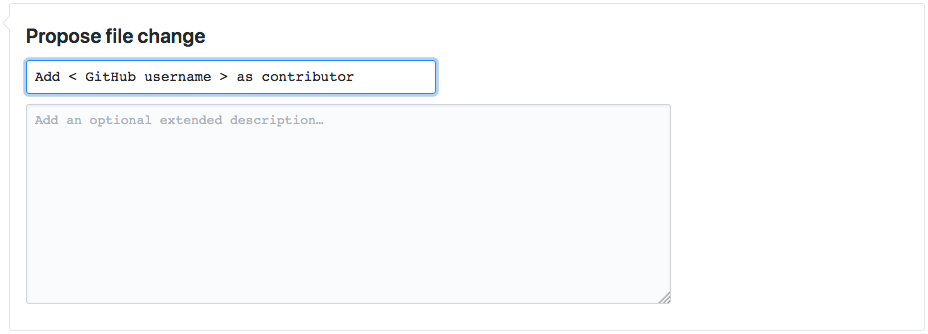

Figure 1: Interface of the GitHub repository of the training material
Click on CONTRIBUTORS.yaml file
View the file
You should see something like:
Figure 2: CONTRIBUTOR file
This CONTRIBUTORS.yaml file is where we collect the information (name, email, etc) about the different contributors to display them on our Hall of Fame. You will add your information there. But first you need to sign in to GitHub to be able to change this file.
Hands-on: Sign in to GitHub
Create a GitHub account (if you do not have one already)
Sign in (if you have already a GitHub account)
Edit a file
You can now modify the CONTRIBUTORS.yaml file to add your information there
Hands-on: Edit a file
Open the CONTRIBUTORS.yaml file on GitHub
Click on icon (top right of the file)
A new page will open:
Figure 3: CONTRIBUTOR file in edit mode
Modify the CONTRIBUTORS.yaml by adding yourself
You should use your GitHub username and add it followed by : (the : is important) at the correct position given the alphabetical order.
Go the bottom of the file
Fill the Propose file change form
Fill the box “Update CONTRIBUTORS.yaml” with “Add < GitHub username > as contributor” (replace < GitHub username > by your GitHub username)
Commit messages
This a commit message: a description explaining why a particular change was made. Theses messages capture the history of the changes, so other contributors can understand what have been done and why
Leave “Add an optional extended description…” empty

Click on Propose file change
Without realizing it, GitHub let you create your first branch (named here patch-1) and add a changement on this branch.
Branching
Branching is the way to work on different versions of a repository at one time. By default your repository has one branch named master which is considered to be the definitive branch. When you create a branch off the master branch, you’re making a copy, or snapshot, of master as it was at that point in time.
By changing a file in this branch, it will diverge from the master branch. It will contain data that is only on this new branch.
Open a Pull Request
Then the addition of your information in the CONTRIBUTORS.yaml file is currently only on your branch patch-1. Not on the master branch and so not only on the Hall of Fame. You can’t add or push directly to the master branch, so you need to create what we call a pull request.
The GitHub interface guides you through this process: after clicking on Propose file change, a new page opens:
This message is a good way to introduce yourself and to explain the message you made. Be kind and descriptive. It helps the reviewers to understand why you did your changes and if it should be intergrated into the master branch (and then website).
Pull request messages
GitHub uses Markdown, a simple Markup language, to render the Pull request messages. You can then add bold test, lists, images, etc.
Check the changes you made to be sure
Click on Create pull request
You have created your first pull request!
Your pull request will be reviewed. There are two possible outcomes:
Your pull request is accepted. Congratulations! Your changes will be merged into the master branch of the original repository. The website will be re-built and you will be in the Hall of Fame
Your pull request needs modifications: the reviewers will ask for some changes, possibly because the automatic tests are failing.
Update a Pull Request
One of the reviewers of your pull request asked you to add your name after your GitHub username in the CONTRIBUTORS.yaml file.
Hands-on: Update a Pull Request
Go to the list of pull request tab on GitHub
Click on your pull request
You can see here the comments the reviewers left you
Click on Files changed tab
You can see there the changes you made:
In green with +: what you added
In red with -: what you deleted
Click on icon
Add your name below your GitHub username
It should look like:
bebatut:
name: Bérénice Batut
Navigate to the bottom of the file
Fill the Commit changes form, similarly to the Propose file change form before
Make sure the Commit directly to the patch-1 branch is selected
Click on Commit changes
The pull request should be automatically updated
Check that the new changes are added to the pull request on GitHub
Conclusion
With this tutorial, you learn how to use GitHub to change a file, create a pull request and then contribute to the training material.
More about GitHub
Via the GitHub interface, you can also go further: create file, branch directly, etc.
To learn that, we recommend you to read the GitHub guide
Key points
You can't add or push directly to the `master` branch, so you need to create a pull request
1 pull request = 1 branch
The pull request is the foundation of the collaborative development of the training material
Developing GTN training material
This tutorial is part of a series to develop GTN training material, feel free to also look at:
Congratulations on successfully completing this tutorial!
Help us improve this content!
Please take a moment to fill in the Galaxy Training Network
Feedback Form.
Your feedback helps us improve this tutorial and will be considered
in future revisions.